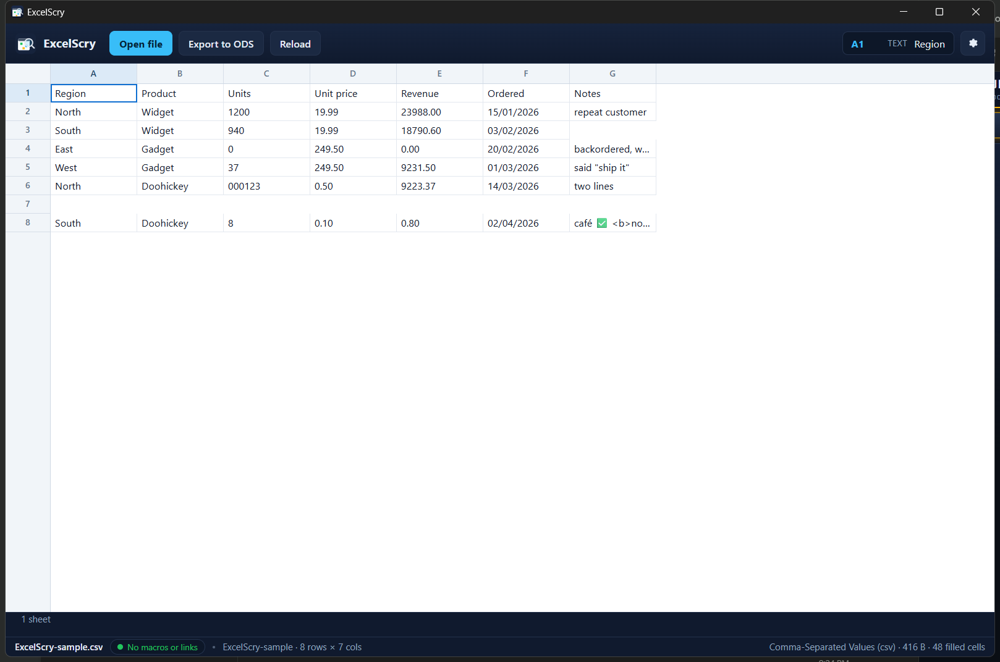

<!doctype html>
<meta charset="utf-8">
<title>ExcelScry — opening a delimited text file</title>
<style>
  body { margin: 0; background: #1b1d22; color: #c9cdd6;
         font: 14px/1.5 Segoe UI, system-ui, sans-serif; }
  figure { margin: 0; }
  img { display: block; width: 100%; height: auto; }
  figcaption { padding: 12px 16px; }
  code { color: #8fd3ff; }
</style>
<figure>
  
  <figcaption>
    ExcelScry opening <code>samples/ExcelScry-sample.csv</code>, written by
    <code>scripts/make_csv_sample.py</code> as CRLF with quoted fields. The
    status bar reads <strong>Comma-Separated Values (csv)</strong> and
    <strong>8 rows × 7 cols</strong>: the field holding a comma stays one cell,
    the doubled quote becomes one quote, the two-line note stays one record, the
    blank line is still a row, and <code>000123</code> stays an identifier
    rather than becoming <code>123</code>. The badge reads
    <strong>No macros or links</strong> because a text file is not a package and
    cannot carry them.
  </figcaption>
</figure>
